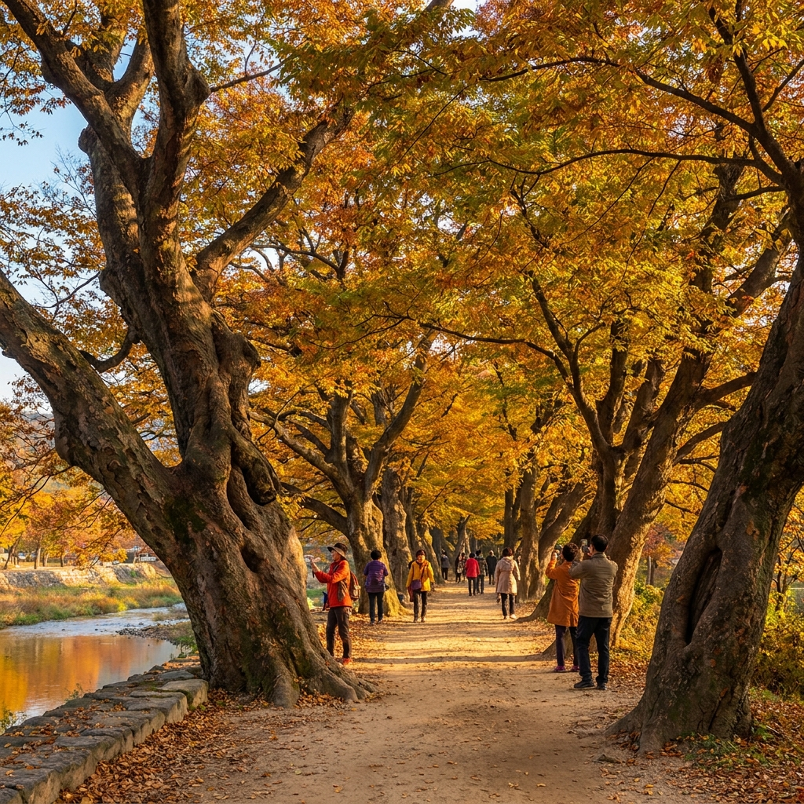
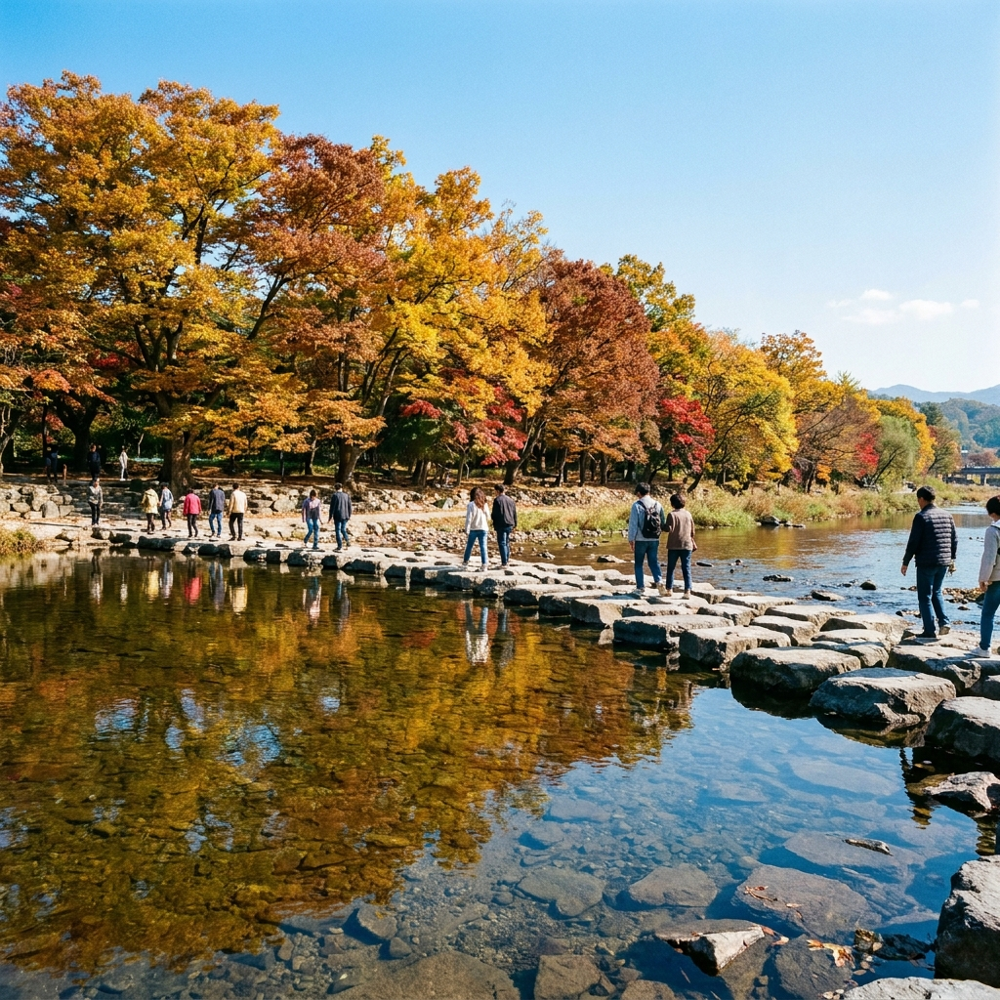

담양 관방제림 가을 단풍길 언제 절정인가 — 2km 고목 숲길 산책 코스와 국수의거리·메타프로방스 주차 팁
천연기념물 제366호로 지정된 담양 관방제림(官防堤林)의 가을 단풍은 10월 22일경부터 물들기 시작하여 10월 말부터 11월 초순 사이에 절정을 맞이합니다.
조선 인조 시대에 홍수를 막기 위해 제방을 쌓고 심은 200~400년 수령의 푸조나무, 팽나무, 느티나무 등 거목 400여 그루가 담양천을 따라 약 2km 길이의 거대한 황금빛 단풍 터널을 연출합니다.
숲길 전체가 평탄한 흙길 산책로로 이어져 있어 입장료는 완전 무료이며, 산책로 바로 곁에 담양의 명물인 국수의거리가 맞닿아 있어 따뜻한 잔치국수와 함께 가을 낭만을 즐기기에 최적입니다.
담양천 무료 둔치 주차장 이용 요령과 징검다리를 건너 만나는 죽녹원, 그리고 차량으로 5분 거리인 메타세쿼이아길과 메타프로방스를 잇는 실전 당일치기 동선을 안내해 드립니다.

수백 년 된 거목들이 황금빛 가을 단풍 터널을 이루는 담양 관방제림 둑방 산책로 / AI 제작 이미지
01 | 담양 관방제림의 역사적 유래와 300년 고목 단풍의 매력
전라남도 담양읍을 가로지르는 담양천 변에 조성된 관방제림은 조선 시대 선조들의 치수 지혜가 담긴 역사적인 인공 제방 숲입니다.
조선 인조 26년(1648년) 담양부사 성이성이 잦은 수해로부터 마을과 농토를 지키기 위해 제방을 축조하고 나무를 식재한 것이 시초가 되었으며, 이후 철종 연간에 부사 황종림이 대대적으로 보식하여 오늘날의 장대한 숲을 이루었습니다.
약 2km에 달하는 제방길에는 푸조나무, 팽나무, 벚나무, 갈참나무, 느티나무 등 수령 200년에서 400년에 이르는 보호수 400여 그루가 웅장한 자태를 뽐내고 있습니다.
일반적인 산악형 단풍나무와 달리 거대한 고목들이 만들어내는 관방제림의 단풍은 진한 주황빛과 짙은 황금빛이 어우러져 깊이 있는 가을의 중후함을 선사합니다.
숲의 역사적·생태적 가치를 인정받아 1991년 천연기념물로 지정되었으며, 2004년에는 아름다운 숲 전국대회에서 대상을 수상하기도 했습니다.
02 | 2026 담양 관방제림 단풍 개화 시기와 절정 시점 예측
가을철 남도 단풍은 중부 지방보다 약 일주일에서 열흘가량 늦게 시작되어 늦가을의 여유로운 여행을 선사합니다.
올해 담양 관방제림의 첫 단풍 시작 시기는 10월 20일 전후이며, 초록 잎사귀 사이로 노란빛과 갈색빛이 서서히 번져가기 시작합니다.
숲길 전체가 황금빛과 붉은빛으로 온전히 물드는 단풍 절정기는 10월 26일부터 11월 8일 사이로 예상됩니다.
특히 11월 초순에는 나뭇가지에 걸린 단풍뿐만 아니라 바닥에 수북하게 쌓인 낙엽 카펫이 어우러져 가장 낭만적인 풍경을 자아냅니다.
일교차가 큰 가을 아침 햇살을 머금은 오전 9시~11시, 혹은 늦은 오후 15시~17시의 사광(비스듬히 비치는 햇살) 시간대에 방문하시면 단풍 잎사귀가 보석처럼 빛나는 최상의 뷰를 감상할 수 있습니다.
03 | 관방제림 산책 코스 구성과 징검다리 뷰포인트
관방제림 산책로는 담양천을 사이에 두고 양쪽으로 연결되어 있어 다채로운 도보 코스를 즐길 수 있습니다.
가장 정석적인 코스는 국수의거리 시작점 → 관방제림 둑길 고목 숲길(약 2km) → 추성경기장 및 조각공원 → 담양천 징검다리 건너기 → 하천 수변 산책로 → 원점 회귀 동선입니다.
전체 거리는 약 3km 내외로 천천히 걸어도 약 50분에서 1시간 10분 정도 소요됩니다.
산책 중간에 담양천을 가로지르는 넓은 화강암 징검다리는 관방제림 최고의 포토존입니다.
징검다리 한가운데 서서 맑은 하천 수면에 비치는 관방제림의 거대한 단풍 숲과 푸른 가을 하늘을 함께 담으면 남도 가을 여행의 진수를 보여주는 사진을 얻을 수 있습니다.

담양천 징검다리와 잔잔한 물결 위로 반영되는 관방제림 가을 고목 숲길 풍경 / AI 제작 이미지
04 | 관방제림 vs 메타세쿼이아길 vs 죽녹원 가을 코스 비교표
담양 읍내를 중심으로 반경 3km 내에 밀집한 담양 3대 명소의 관람 요금과 소요시간, 성격을 비교해 드립니다.
| 구분 |
관방제림 (하천 둑방길) |
메타세쿼이아 가로수길 |
죽녹원 (대나무 숲) |
| 가을 대표 풍경 |
300년 고목 황금빛 단풍 터널, 담양천 징검다리 |
주황빛 갈색으로 물든 이국적인 메타세쿼이아 가로수길 |
사계절 푸른 울창한 대나무 숲길과 가을 바람소리 |
| 길이 및 소요시간 |
왕복 약 2.5km / 1시간 소요 |
편도 약 2.1km / 40~50분 소요 |
8개 테마길 2.4km / 1시간 30분 소요 |
| 입장료 |
완전 무료 |
성인 2,000원 / 청소년 1,000원 |
성인 3,000원 / 청소년 1,500원 |
| 접근성 및 위치 |
담양읍 중심 / 국수의거리 바로 인접 |
관방제림 끝에서 차로 5분, 자전거 15분 |
관방제림 맞은편 향교교 건너 도보 3분 |
| 주요 특징 |
반려견 동반 가능, 자전거 산책로 연계 |
메타프로방스 복합단지 쇼핑·디저트 연계 |
오르막 언덕 숲길, 대나무 족욕 체험장 |
| 추천 시간대 |
오후 15:00~17:00 (노을과 단풍) |
오전 10:00~12:00 (황금빛 가로수길) |
오전 09:00~11:00 (한적한 댓잎 소리) |
세 곳 모두 매우 인접해 있어 아침에 죽녹원을 둘러본 뒤 점심으로 국수를 먹고, 오후에 관방제림과 메타세쿼이아길을 이어 걷는 당일 코스가 가장 추천됩니다.
05 | 관방제림 산책 후 필수 코스! 담양 국수의거리 가을 미식
관방제림 제방 둑길 바로 아래 계단만 내려오면 수십 년 전통의 '담양 국수의거리'가 길게 형성되어 있습니다.
오래된 나무 그늘 아래 평상이 줄지어 늘어서 있어 담양천의 가을 물결을 바라보며 야외에서 식사를 즐길 수 있는 특별한 명소입니다.
대표 메뉴는 멸치를 듬뿍 넣고 깊고 진하게 우려낸 따뜻한 멸치국수(물국수)와 새콤달콤하게 비벼낸 열무비빔국수입니다.
국수와 함께 한약재를 넣고 삶아내어 껍질이 짙은 갈색을 띠는 댓잎 삶은 달걀(약계란)과 바삭하게 부쳐낸 해물파전을 곁들이는 것이 국룰입니다.
쌀쌀해진 가을 바람을 맞으며 숲길을 걸은 뒤 뜨끈한 멸치 육수 한 모금을 들이켜면 몸 전체가 훈훈하게 풀리는 행복을 맛보실 수 있습니다.
담양천변 야외 평상에서 맛보는 따뜻한 멸치국수와 비빔국수의 가을 별미 / AI 제작 이미지
06 | 메타프로방스와 메타세쿼이아 가로수길 연계 동선
관방제림 산책로의 동쪽 끝자락(추성경기장 방면)에서 천변 자전거 도로를 따라가거나 차량으로 5분만 이동하면 메타세쿼이아 가로수길에 닿습니다.
2.1km에 걸쳐 하늘 높이 솟은 메타세쿼이아 나무들이 주황빛 갈색으로 짙게 물드는 풍경은 이국적인 가을 정취의 극치를 보여줍니다.
가로수길 바로 옆에는 프랑스 남부의 아기자기한 마을을 모티브로 조성된 유럽풍 복합 문화마을 메타프로방스가 자리 잡고 있습니다.
메타프로방스에는 담양 갈비 떡갈비 정식 식당, 댓잎 도넛과 젤라토 베이커리, 독특한 핸드메이드 소품 샵들이 가득하여 산책 후 쇼핑과 디저트를 즐기기에 완벽합니다.
넓은 광장과 이국적인 파스텔톤 건축물 곳곳에 트릭아트와 포토존이 설치되어 있어 가족 및 연인들의 기념사진 촬영지로도 손색이 없습니다.
07 | 관방제림 주변 무료 주차장 팁과 교통 안내
단풍 시즌 담양은 많은 방문객이 몰리기 때문에 주차 위치를 미리 파악하고 진입하는 것이 관건입니다.
🚗 관방제림 & 죽녹원 주변 무료 주차장 위치 안내
1. 관방제림 천변 둔치 주차장 (추천 1위): 담양읍 객사리 하천 둔치에 위치한 넓은 무료 주차장으로 국수의거리와 관방제림 둑길 바로 아래 진입 가능
2. 담양종합체육관 / 추성경기장 주차장 (추천 2위): 관방제림 산책로 중간 지점에 위치하여 주차 공간이 매우 넓고 무료 개방
3. 죽녹원 후문 공영주차장: 정문이 혼잡할 때 후문 대형 주차장을 이용하면 여유가 있으며 정문 방면으로 셔틀이나 도보 이동 가능
4. 메타프로방스 대형 주차장: 메타세쿼이아길 방문 시 진입이 용이하며 완벽한 무료 주차 시설 구비
주말에는 오전 11시부터 하천 둔치 주차장이 빠르게 차오르므로 가급적 오전 10시 이전 입차를 권장합니다.
08 | 담양 당일치기 가을 나들이 핵심 체크리스트
담양 여행을 더욱 알차고 편안하게 즐기기 위한 실전 방문 수칙입니다.
🍁 담양 가을 단풍 여행 5대 체크포인트
• 자전거 대여 활용: 관방제림 입구에서 2인용 또는 4인용 패밀리 자전거를 대여하면 천변 자전거 전용도로를 따라 메타세쿼이아길까지 시원하게 달릴 수 있습니다.
• 도보 편한 신발 착용: 관방제림 흙길과 죽녹원 오르막길, 메타세쿼이아길 등 하루 도보량이 8,000보를 훌쩍 넘으므로 쿠션감 좋은 운동화를 착용하세요.
• 일교차 대비 겉옷: 담양천 변은 물안개가 피어오르고 강바람이 불어 아침저녁으로 체감 온도가 낮습니다. 머플러나 가벼운 패딩을 지참하세요.
• 문화재 숲 에티켓: 천연기념물로 지정된 수백 년 고목의 뿌리를 밟거나 훼손하지 않도록 지정된 산책로만 이용해 주세요.
• 국수의거리 주문 팁: 2인 방문 시 멸치국수 1그릇 + 비빔국수 1그릇 + 댓잎 달걀 2개를 주문하시면 완벽한 맛의 균형을 즐길 수 있습니다.
09 | 추천 시간대별 풀코스 일정표
하루 동안 담양의 알짜배기 가을 명소를 완벽히 소화하는 추천 동선입니다.
오전 09:30 죽녹원 도착, 댓잎 바람소리를 들으며 푸른 대나무 숲길 산책 → 오전 11:00 향교교 건너 관방제림 진입 및 징검다리 반영 사진 촬영 → 오전 11:40 국수의거리 야외 평상에서 멸치국수와 파전으로 든든한 점심 식사 → 오후 12:40~14:00 관방제림 2km 고목 단풍 터널 걷기 및 추성경기장 쉼터 휴식 → 오후 14:10~15:30 차량으로 메타세쿼이아길 이동 후 갈색 가로수길 산책 → 오후 15:30~17:00 메타프로방스에서 댓잎 도넛 디저트와 기념품 쇼핑 후 귀가.
황금빛 숲길과 정겨운 로컬 국수, 그리고 이국적인 프로방스 마을이 어우러진 담양에서 풍성한 가을의 낭만을 만끽해 보시기 바랍니다.
#담양관방제림
#관방제림단풍
#담양국수의거리
#담양가볼만한곳
#담양가을여행
#메타세쿼이아길
#메타프로방스
#담양당일치기
#남도단풍명소
#천연기념물숲길